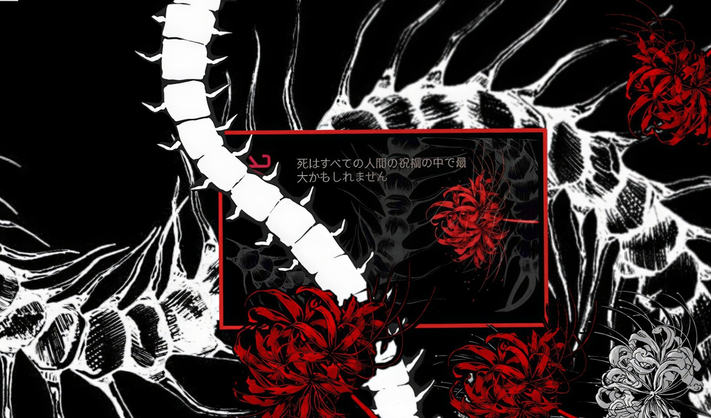

Graduação
Ciência da Computação
Universidade Cruzeiro do Sul
Cursando o 2º semestre, com previsão de conclusão em 2029.
Estudante de Ciência da Computação
Sou estudante de tecnologia interessado em desenvolvimento de soluções digitais. Atualmente, estou desenvolvendo meus conhecimentos por meio de projetos acadêmicos e pessoais.
Curso Ciência da Computação na Universidade Cruzeiro do Sul e estou construindo minha base em tecnologia com projetos acadêmicos e pessoais.
Ciência da Computação
Universidade Cruzeiro do Sul
Cursando o 2º semestre, com previsão de conclusão em 2029.
Em desenvolvimento.
Em desenvolvimento.
Em desenvolvimento.

Site que apresenta meu perfil, minha formação e minhas competências, com o currículo disponível online.
Ver no GitHub Link do site em breve
O currículo em PDF será disponibilizado em breve.
Currículo em breve